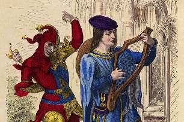

Борис Акунин
Мой календарь
Есть День Дураков - 1 апреля, а в Испании существует еще и День Простаков, примерно то же самое, но добрее. «Dia de los Inocentes» вообще-то значит «день невинных». Имеются в виду невинные младенцы, которых по приказу царя Ирода 28 декабря умертвили в Вифлееме.
Существуют разные гипотезы, как трагическое библейское событие переродилось в веселый праздник. Вероятно поминовение младенцев наложилось на народный «Праздник сумасшедших» - послерождественские карнавальные бесчинства.
Сегодня полагается устраивать «иносентады», незлые шутки с приятным финалом. Успех мистификации гарантирован, потому что ваши знакомые скорее всего не испанцы и с этой традицией не знакомы.
Вот и познакомятся.
Например, если вы живете в России, можно отправить другу призывного возраста конверт с надписью «Повестка из военкомата», а внутри - красивая открытка и билет на ёлку. Добрая, легкомысленная шутка. Друг оценит.
Но только потом дразниться нужно не «обманули дурака на четыре кулака» («дурак» - слово обидное), а «обманули простака на четыре кулака».
Проявляйте креативность, фантазируйте.